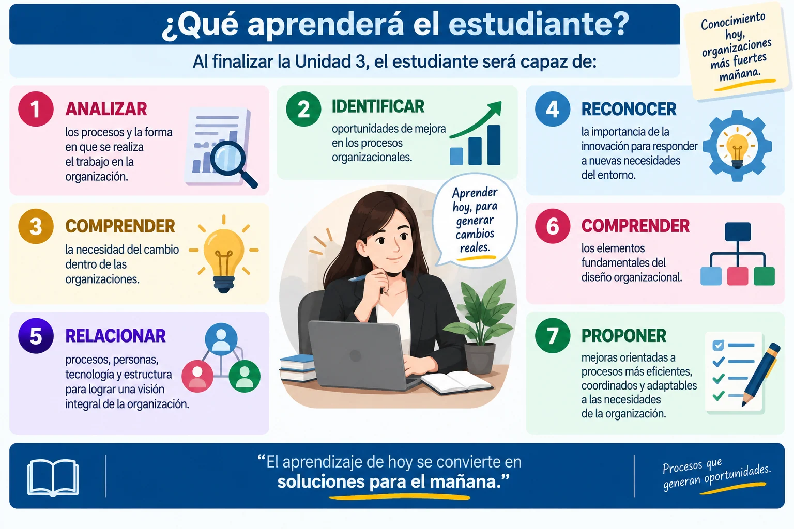
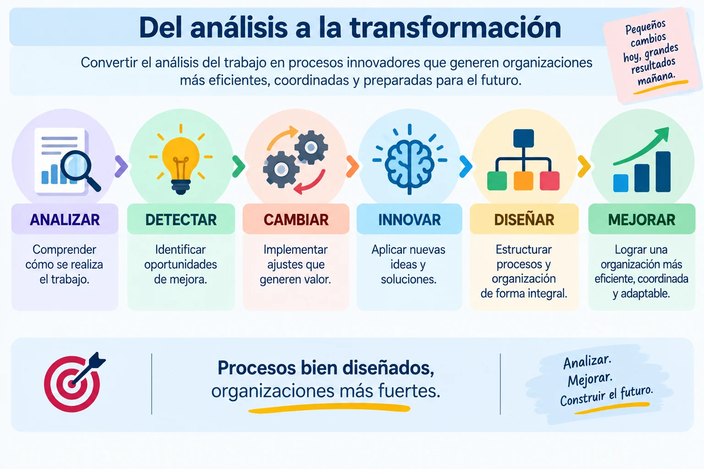
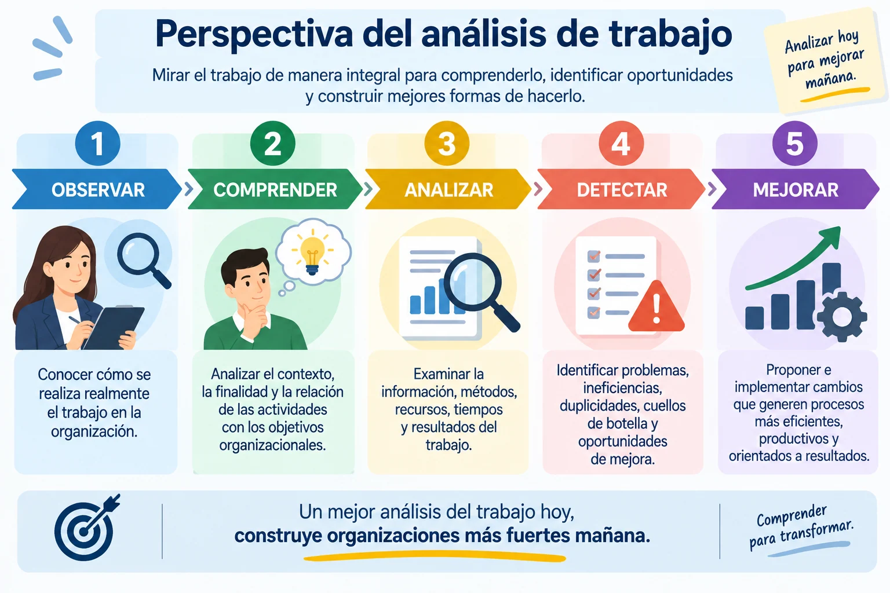
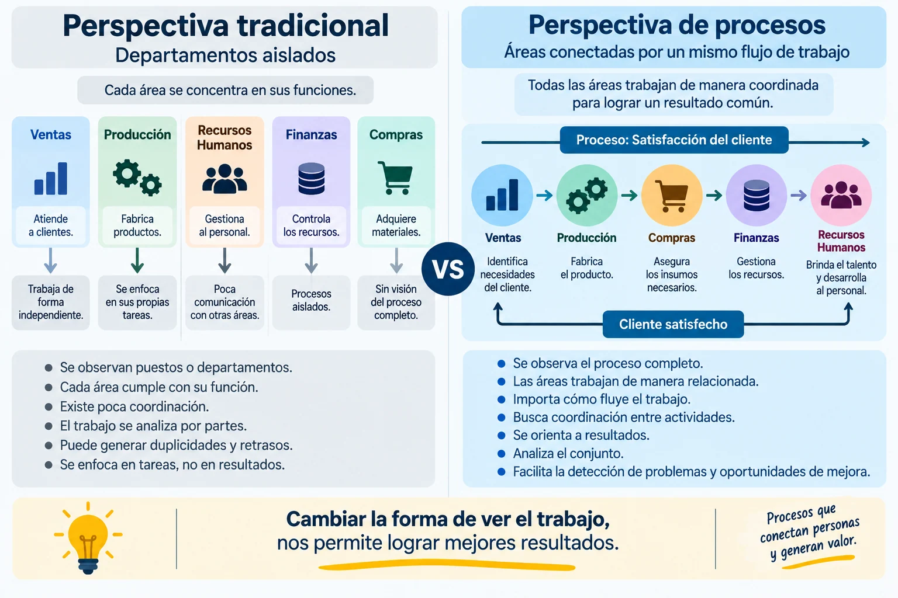
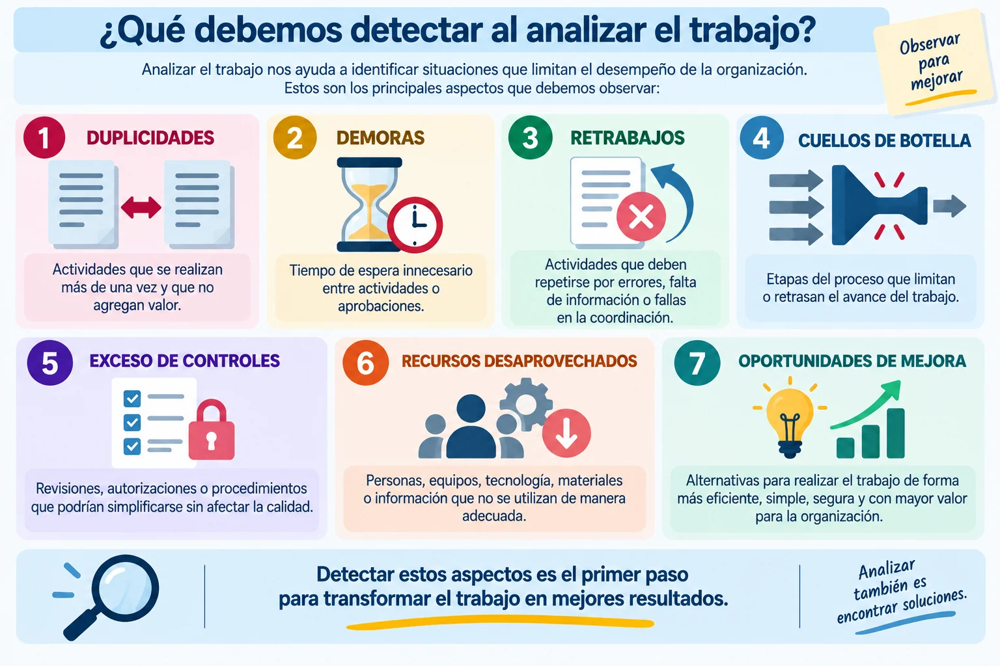
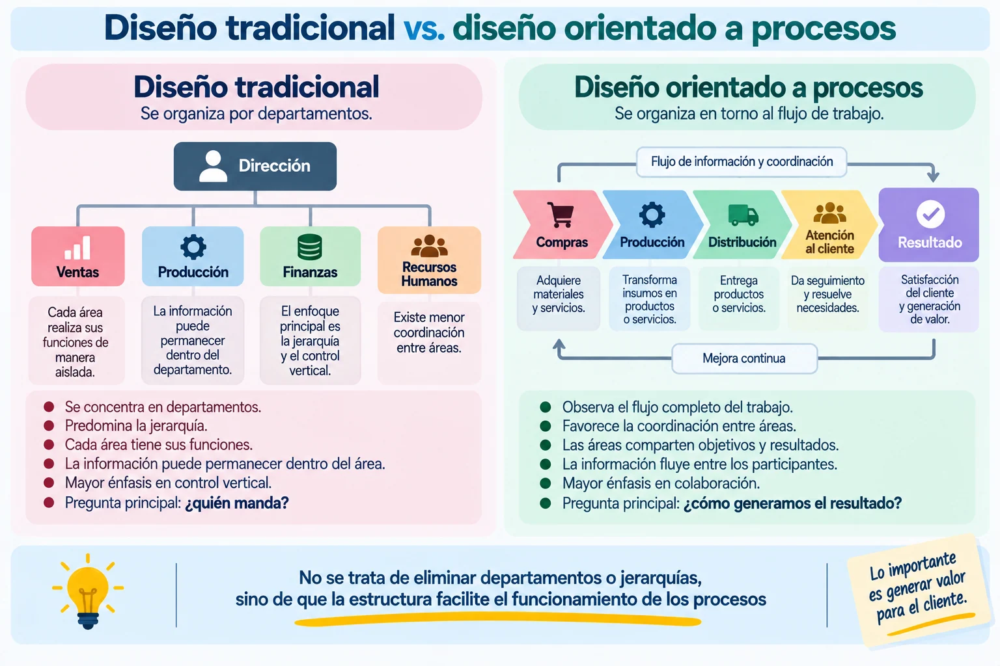

Unidad 3 - Diseño de procesos organizacional
Unidad 3. Diseño de procesos organizacional
Objetivo
Analizar los procesos de trabajo de una organización para identificar oportunidades de cambio e innovación y comprender cómo el diseño organizacional permite mejorar la coordinación, eficiencia y adaptación de la organización.

Temario
Temario unidad 3.
3. DISEÑO DE PROCESOS ORGANIZACIONAL
3.1 Perspectiva del análisis de trabajo
3.2 Cambios e innovaciones organizacionales
3.3 El diseño organizacional

3.1 Perspectiva del análisis de trabajo
3.1 Perspectiva del análisis de trabajo
¿Qué es el análisis del trabajo?
El análisis del trabajo consiste en estudiar de manera sistemática cómo se realizan las actividades dentro de una organización, quién las realiza, qué recursos utiliza, cuánto tiempo requieren y cómo se relacionan con otras actividades.
Su propósito es comprender la situación actual para identificar problemas, necesidades y oportunidades de mejora.
Podemos representarlo así:
OBSERVAR → COMPRENDER → ANALIZAR → DETECTAR → MEJORAR
La pregunta fundamental es:
¿La manera en que actualmente realizamos el trabajo es la más adecuada o existe una forma mejor de hacerlo?

¿Qué significa analizar el trabajo desde una perspectiva organizacional?
No debemos observar únicamente a la persona que realiza una actividad.
Debemos analizar el conjunto de elementos que intervienen en el trabajo:
Personas
¿Quién realiza las actividades y qué responsabilidades tiene?
Actividades
¿Qué tareas se realizan y en qué secuencia?
Métodos
¿Cómo se realiza el trabajo?
Información
¿Qué datos se necesitan y cómo circulan?
Tecnología
¿Qué sistemas, equipos o herramientas se utilizan?
Tiempo
¿Cuánto tarda cada actividad?
Recursos
¿Qué materiales y recursos económicos se requieren?
Resultados
¿Qué se obtiene al finalizar el proceso?
Por ello podemos visualizar el trabajo como:
PERSONAS + ACTIVIDADES + MÉTODOS + INFORMACIÓN + TECNOLOGÍA + RECURSOS → RESULTADOS
De la actividad al proceso
Una actividad no funciona de manera aislada.
Por ejemplo, pensemos en una solicitud de compra:
SOLICITAR → REVISAR → AUTORIZAR → COMPRAR → RECIBIR → REGISTRAR
Cada paso puede ser realizado correctamente y, aun así, el proceso completo puede ser lento.
¿Por qué?
Porque podrían existir:
esperas → autorizaciones excesivas → información duplicada → falta de coordinación → retrabajos
Por eso el análisis debe observar todo el recorrido del trabajo.
Perspectiva tradicional vs. perspectiva de procesos

La perspectiva de procesos pregunta:
¿Cómo contribuye cada actividad al resultado final?
¿Qué debemos buscar al analizar el trabajo?

El cuello de botella
Este concepto merece una explicación particular.
Un cuello de botella es una etapa cuya capacidad o velocidad limita el funcionamiento del proceso completo.
Por ejemplo:
RECIBIR 30 solicitudes
↓
REGISTRAR 30 solicitudes
↓
REVISAR solamente 10 solicitudes
↓
AUTORIZAR
↓
PROCESAR
Aunque las primeras actividades funcionen rápidamente, las solicitudes comenzarán a acumularse en REVISIÓN.
Por ello, mejorar únicamente las demás etapas no resolvería el problema principal.
Primero debemos identificar dónde se encuentra la restricción del proceso.
Analizar con evidencia
Una buena perspectiva del análisis del trabajo no debe basarse solamente en opiniones.
Podemos utilizar:
OBSERVACIÓN + ENTREVISTAS + DOCUMENTOS + REGISTROS + INDICADORES + MEDICIÓN DE TIEMPOS
Por ejemplo, un trabajador puede decir:
“Las autorizaciones normalmente son rápidas”.
Pero los registros pueden mostrar:
Tiempo promedio de autorización: 3.5 días.
La evidencia permite comparar:
LO QUE SE CREE QUE OCURRE ↔ LO QUE REALMENTE OCURRE
Antes – Durante – Después
Otra forma sencilla de enseñar al alumno a analizar un trabajo es dividirlo en tres momentos.
ANTES
¿Qué información, recursos y condiciones se necesitan para comenzar?
DURANTE
¿Qué actividades se realizan, quién participa y qué problemas aparecen?
DESPUÉS
¿Qué resultado se obtiene, cuánto tiempo tomó y si se cumplió el objetivo?
Así:
ENTRADAS → PROCESO → RESULTADOS
Este enfoque ayuda a comprender que todo proceso necesita entradas, realiza una transformación y genera determinados resultados.
Ejemplo:
Supongamos que una empresa tarda cinco días en autorizar una solicitud.
Inicialmente alguien podría concluir:
“El empleado encargado trabaja demasiado lento”.
Pero al analizar todo el proceso encontramos:
Día 1: se recibe la solicitud.
Día 2: espera revisión.
Día 3: se solicita información faltante.
Día 4: espera autorización.
Día 5: se autoriza.
El problema no necesariamente está en la velocidad de una persona.
El análisis revela:
ESPERAS + INFORMACIÓN INCOMPLETA + FLUJO DE AUTORIZACIÓN
Analizar el trabajo significa estudiar el sistema, no buscar inmediatamente a una persona responsable del problema.
Preguntas para analizar un proceso
El estudiante puede utilizar estas preguntas:
¿Qué resultado buscamos?
¿Qué actividades se realizan?
¿Cuáles agregan valor?
¿Quién participa?
¿Cómo circula la información?
¿Dónde existen esperas?
¿Qué actividades se repiten?
¿Dónde ocurren errores?
¿Qué recursos se utilizan?
¿Cuánto tarda el proceso?
¿Qué podría eliminarse, combinarse, reorganizarse o simplificarse?
Del análisis a la mejora
Finalmente, el análisis debe conducir a una acción:
SITUACIÓN ACTUAL → ANÁLISIS → HALLAZGOS → OPORTUNIDADES → PROPUESTA DE MEJORA
No analizamos un proceso únicamente para describirlo. Lo hacemos para comprender qué funciona, qué no funciona y qué puede hacerse mejor.
Para mejorar un proceso primero debemos comprender cómo funciona realmente.
3.2 Cambios e innovaciones organizacionales
3.2 Cambios e innovaciones organizacionales
¿Qué es el cambio organizacional?
El cambio organizacional es la modificación de algún elemento de la organización con el propósito de adaptarse, resolver problemas o mejorar su funcionamiento.
Los cambios pueden presentarse en:
PROCESOS – ESTRUCTURA – PERSONAS – TECNOLOGÍA – MÉTODOS – PRODUCTOS O SERVICIOS
Por ejemplo, una organización puede cambiar un procedimiento de autorización, reorganizar responsabilidades, implementar un nuevo sistema digital o modificar la manera de atender a sus clientes.
Cambiar no significa hacer las cosas diferentes porque sí; significa responder a una necesidad y buscar mejores resultados.
¿Por qué cambian las organizaciones?
Las organizaciones operan en entornos que cambian constantemente. Algunos factores que pueden generar la necesidad de cambio son:
Tecnología
Aparición de nuevas herramientas, sistemas y formas de automatización.
Clientes
Nuevas necesidades, expectativas y formas de consumir productos o servicios.
Competencia
Nuevos competidores o mejores formas de ofrecer productos y servicios.
Costos
Necesidad de utilizar mejor los recursos.
Problemas internos
Errores, retrasos, duplicidades o baja coordinación.
Crecimiento
La estructura que funcionaba para una organización pequeña puede dejar de ser adecuada cuando aumenta su tamaño.
Normatividad
Nuevas disposiciones pueden requerir modificaciones en procedimientos y controles.
Podemos resumirlo:
ENTORNO + TECNOLOGÍA + CLIENTES + COMPETENCIA + PROBLEMAS INTERNOS → NECESIDAD DE CAMBIO
Cambio e innovación no son exactamente lo mismo
Esta diferencia es importante.
Cambio
Consiste en modificar una situación existente.
Ejemplo:
Una solicitud que anteriormente requería cuatro firmas ahora requiere solamente dos.
Innovación
Consiste en introducir y aplicar una idea, método, proceso, producto o solución nueva o significativamente mejorada que genere valor.
Ejemplo:
Sustituir solicitudes impresas por un sistema digital que registra, dirige, autoriza y permite consultar automáticamente el estado de cada solicitud.
Por lo tanto:
TODO CAMBIO NO NECESARIAMENTE ES INNOVACIÓN.
La innovación debe generar una mejora o valor significativo.
Tipos de innovación organizacional
Innovación en procesos
Mejora la forma en que se realizan las actividades.
Ejemplo: automatizar la generación de reportes.
Innovación tecnológica
Incorpora nuevas herramientas o sistemas.
Ejemplo: implementar una plataforma digital para administrar expedientes.
Innovación organizacional
Modifica estructuras, responsabilidades o formas de coordinación.
Ejemplo: crear equipos de trabajo multidisciplinarios para gestionar proyectos.
Innovación en productos o servicios
Introduce o mejora aquello que la organización ofrece.
Ejemplo: incorporar un nuevo servicio de atención digital.
Del problema a la innovación
La innovación puede surgir de una necesidad concreta.
Podemos enseñar este proceso así:
PROBLEMA → ANÁLISIS → IDEA → PROPUESTA → PRUEBA → IMPLEMENTACIÓN → RESULTADO
Problema
Identificamos algo que no funciona adecuadamente.
Análisis
Investigamos las causas.
Idea
Buscamos alternativas.
Propuesta
Seleccionamos una solución viable.
Prueba
Comprobamos su funcionamiento, cuando sea posible.
Implementación
Ponemos la solución en práctica.
Resultado
Evaluamos si realmente produjo una mejora.
¿Qué puede impulsar la innovación?
La innovación no depende únicamente de la tecnología.
Puede surgir de:
PERSONAS + CONOCIMIENTO + CREATIVIDAD + INFORMACIÓN + TECNOLOGÍA + COLABORACIÓN
Una organización puede innovar incluso mediante una modificación sencilla si esta produce una mejora significativa en la forma de trabajar.
Resistencia al cambio
Uno de los principales retos del cambio organizacional es que las personas pueden mostrar resistencia.
La resistencia puede aparecer por:
MIEDO A LO DESCONOCIDO
FALTA DE INFORMACIÓN
HÁBITOS
INCERTIDUMBRE
FALTA DE CAPACITACIÓN
PERCEPCIÓN DE PÉRDIDA DE CONTROL
EXPERIENCIAS NEGATIVAS ANTERIORES
La resistencia no debe interpretarse automáticamente como falta de disposición. También puede indicar que la organización no ha explicado suficientemente el cambio o no ha preparado adecuadamente al personal.
¿Cómo facilitar el cambio?
Para incrementar las posibilidades de que un cambio funcione debemos considerar:
Comunicar
Explicar qué cambiará, por qué y qué se espera lograr.
Involucrar
Permitir que las personas relacionadas con el proceso participen cuando corresponda.
Capacitar
Proporcionar conocimientos y habilidades para trabajar de la nueva manera.
Proporcionar recursos
Asegurar que existan herramientas, tiempo y apoyo suficientes.
Implementar
Poner en práctica el cambio de manera organizada.
Dar seguimiento
Observar resultados y dificultades.
Ajustar
Corregir aquello que no esté funcionando como se esperaba.
Una secuencia muy clara sería:
COMUNICAR → INVOLUCRAR → CAPACITAR → IMPLEMENTAR → EVALUAR → AJUSTAR
Ejemplo
Una empresa recibe solicitudes de vacaciones mediante formatos impresos.
Situación actual
Empleado llena formato → entrega a supervisor → supervisor firma → RH recibe → RH captura → RH informa resultado
Problemas detectados:
papel + traslados + captura repetida + dificultad para conocer el estado de la solicitud
Cambio
Se decide utilizar un formulario digital.
Pero simplemente pasar el mismo formato a una computadora puede no solucionar todos los problemas.
Innovación
Se diseña un proceso donde:
SOLICITUD DIGITAL → VALIDACIÓN AUTOMÁTICA → AUTORIZACIÓN → REGISTRO → NOTIFICACIÓN
Ahora existe una modificación más integral del proceso.
¿Estamos digitalizando el proceso anterior o realmente estamos diseñando una mejor manera de trabajar?
Innovación y mejora continua
No todas las innovaciones tienen que representar cambios enormes.
Muchas mejoras comienzan con preguntas sencillas:
¿Por qué hacemos esto así?
¿Existe una manera más sencilla?
¿Qué actividad podríamos eliminar?
¿Qué podríamos automatizar?
¿Qué necesita realmente el usuario?
¿Qué información podría utilizarse mejor?
Esto genera un ciclo:
OBSERVAR → CUESTIONAR → PROPONER → PROBAR → EVALUAR → MEJORAR
La innovación organizacional no consiste solamente en incorporar tecnología, sino en encontrar y aplicar mejores formas de generar valor.
Texto
3.3 El diseño organizacional
¿Qué es el diseño organizacional?
El diseño organizacional es el proceso mediante el cual una organización define y organiza su estructura, puestos, responsabilidades, autoridad, procesos y mecanismos de coordinación para alcanzar sus objetivos.
En términos sencillos, responde a preguntas como:
¿QUÉ SE HACE? → ¿QUIÉN LO HACE? → ¿QUIÉN DECIDE? → ¿CÓMO SE COORDINAN? → ¿CÓMO FLUYE EL TRABAJO?
El diseño organizacional busca que todos los elementos funcionen de manera integrada.
Diseñar una organización no significa solamente elaborar un organigrama; significa definir cómo debe funcionar el trabajo.
¿Por qué es importante?
Una organización puede tener personal capacitado y tecnología adecuada, pero presentar problemas si las responsabilidades, la autoridad y la coordinación no están claramente definidas.
Un buen diseño organizacional permite:
CLARIDAD — cada persona conoce sus funciones y responsabilidades.
COORDINACIÓN — las diferentes áreas trabajan de manera relacionada.
COMUNICACIÓN — la información llega a quienes la necesitan.
EFICIENCIA — se reducen duplicidades y actividades innecesarias.
CONTROL — se establecen responsabilidades y niveles de autoridad.
ADAPTACIÓN — la organización puede responder mejor ante cambios.
Elementos del diseño organizacional
1. División del trabajo
Consiste en distribuir las actividades entre diferentes personas, puestos o áreas.
Por ejemplo:
Ventas → vende
Compras → adquiere materiales
Recursos Humanos → administra al personal
Finanzas → administra recursos financieros
La división permite la especialización, pero una división excesiva puede provocar aislamiento entre departamentos.
2. Departamentalización
Consiste en agrupar puestos y actividades relacionadas.
Puede realizarse, por ejemplo, por:
FUNCIONES – PRODUCTOS – CLIENTES – ZONAS GEOGRÁFICAS – PROCESOS
Una empresa podría organizarse funcionalmente en:
DIRECCIÓN → VENTAS – OPERACIONES – FINANZAS – RECURSOS HUMANOS
3. Jerarquía y autoridad
La jerarquía establece los diferentes niveles de responsabilidad y autoridad.
Permite responder:
¿Quién reporta a quién?
¿Quién puede tomar determinadas decisiones?
¿Quién supervisa cada actividad?
Debe existir congruencia entre:
RESPONSABILIDAD ↔ AUTORIDAD
Si una persona tiene una responsabilidad, necesita contar con suficiente autoridad para cumplirla.
4. Tramo de control
El tramo de control se refiere al número de personas que dependen directamente de un responsable.
Por ejemplo:
GERENTE
↓
6 colaboradores
El tramo adecuado depende de factores como:
complejidad del trabajo + experiencia del personal + grado de estandarización + necesidad de supervisión
No existe un número universal adecuado para todas las organizaciones.
5. Centralización y descentralización
Este concepto ayuda al alumno a comprender dónde se toman las decisiones.
Centralización
Las decisiones se concentran principalmente en los niveles superiores.
Ventaja posible: mayor control.
Riesgo posible: decisiones más lentas cuando demasiados asuntos necesitan autorización superior.
Descentralización
Parte de las decisiones se delega a otros niveles de la organización.
Ventaja posible: mayor rapidez y capacidad de respuesta.
Riesgo posible: requiere responsabilidades, criterios y controles claramente establecidos.
No significa que una sea siempre mejor que la otra. La organización debe determinar qué decisiones conviene centralizar y cuáles puede delegar.
6. Formalización
La formalización indica en qué medida las actividades se encuentran definidas mediante:
POLÍTICAS – PROCEDIMIENTOS – MANUALES – REGLAS – FORMATOS – RESPONSABILIDADES
La formalización puede aportar orden y consistencia.
Sin embargo:
Muy poca formalización → confusión e improvisación
Formalización excesiva → burocracia, lentitud y poca flexibilidad
Por ello debe existir un equilibrio.
7. Coordinación
Dividir el trabajo no es suficiente. Después debemos integrarlo.
Por ejemplo:
VENTAS → PRODUCCIÓN → ALMACÉN → DISTRIBUCIÓN → CLIENTE
Si cada departamento funciona correctamente de manera individual, pero no existe coordinación entre ellos, el resultado final puede ser deficiente.
La coordinación puede apoyarse en:
COMUNICACIÓN + PROCEDIMIENTOS + REUNIONES + SISTEMAS DE INFORMACIÓN + RESPONSABLES + OBJETIVOS COMUNES
Estructura organizacional y procesos
Aquí conviene conectar con lo estudiado anteriormente.
La estructura establece:
puestos + departamentos + autoridad + responsabilidades
Mientras que los procesos muestran:
cómo fluye el trabajo entre esos elementos para obtener un resultado.
Por eso ambos deben trabajar juntos:
ESTRUCTURA + PROCESOS + PERSONAS + TECNOLOGÍA → RESULTADOS

Algunas señales pueden indicar que la estructura necesita analizarse:
Funciones duplicadas
Responsabilidades poco claras
Demasiados niveles de autorización
Decisiones lentas
Sobrecarga de algunos puestos
Falta de coordinación entre departamentos
Problemas de comunicación
Crecimiento de la organización
Incorporación de nuevas tecnologías
Cambios importantes en procesos o servicios
Ejemplo
Una empresa pequeña comenzó con 10 trabajadores. El propietario autorizaba compras, contrataciones, pagos, descuentos y vacaciones.
La empresa creció hasta 80 trabajadores, pero todas esas decisiones continúan dependiendo de la misma persona.
El resultado es:
SOLICITUDES → ESPERA → PROPIETARIO → AUTORIZACIÓN → CONTINUACIÓN
Se generan retrasos porque existe una concentración excesiva de decisiones.
Una alternativa de rediseño podría establecer:
Decisiones operativas → responsables de área
Decisiones de mayor impacto → dirección
De esta manera se mantienen controles importantes, pero se evita que todas las decisiones recorran exactamente el mismo camino.
¿Cómo diseñar o rediseñar una organización?
Podemos explicarlo mediante esta secuencia:
1. ANALIZAR
Comprender la situación actual.
2. IDENTIFICAR
Detectar problemas y necesidades.
3. DEFINIR
Establecer actividades, responsabilidades y resultados esperados.
4. AGRUPAR
Organizar actividades y puestos relacionados.
5. ASIGNAR
Definir autoridad y responsabilidades.
6. COORDINAR
Establecer cómo se relacionarán las diferentes áreas.
7. EVALUAR
Comprobar si el diseño facilita el logro de los objetivos.
Así llegamos a:
ANALIZAR → IDENTIFICAR → DEFINIR → AGRUPAR → ASIGNAR → COORDINAR → EVALUAR
El diseño organizacional debe facilitar el trabajo, no convertirse en un obstáculo para realizarlo.